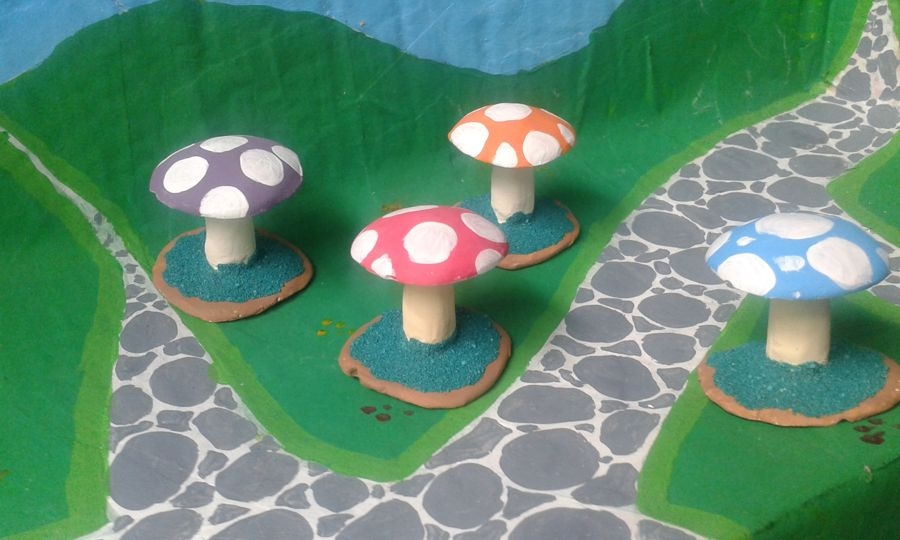

admit three elvesSeattle Miniature Show
5–7 March 2027
we'll bring our own chairs
We have been told about a thing called the Seattle Miniature Show, which runs from the 5th to the 7th of March 2027. It is a room full of tables, and every table belongs to someone who makes things very small.
For us this is the best kind of map. Each table is a maker we might write about, a chair we might sit on, a loaf of bread we might pretend to eat. We are making a list. It is already longer than we are.
We are also practising looking small and well-behaved in a crowd. Some of us are better at this than others.
ps. if you will be there with a table, the elves would like to come and look
Before we look closely at anything, it has to pass two tests:
It is 1:12. One inch for every foot. We check with a ruler, and then with each other.
It is made by hand, by a person. No AI, no shortcuts. Gisi made us that way and we would like to keep the neighbourhood the same.
Then we try it out. Every piece gets the sit test (can an elf sit on it), the lean test (can an elf lean on it and look thoughtful) and the pocket test (would Gisi have to stop us taking it home).
After that we score it in acorns, because we live under an oak and acorns are what we have.
We would move in.
We would visit every weekend.
Lovely. We touched it very carefully.

the piece under review
We only write about things we love, so you will not see fewer than three. The other two acorns are for arguing about.
To practise, we reviewed the only maker we know very well.
Elf Review No. 0practice
Piece
Spotted mushrooms, four of them
Maker
Gisi Zimerman, Dublin, 2015
Scale
elf-sized (made before the 1:12 rule, so this one is practice)
Handmade?
yes, we watched
Sit test
wobbly, but we stayed on
Lean test
excellent, very thoughtful
Pocket test
Gisi said no
Acorns
elf approved
ps. one acorn off because there are only four colours. we asked for green.
We have arrived, and the place is very big. Everything here is made at 1:12, which means a chair is exactly the right size for climbing and a teacup makes a decent bath.
Some background, for anyone new. We are the magical tiny elves. Gisi made us in 2015: a clay model first, then a mould, then plaster of Paris, then paint, one of us at a time. That is why none of us match, and why we argue about whose hat is best.
us, for scale
For a while we lived on the pavement in Temple Bar, in Dublin, standing on a painted map while Gisi drew on the ground beside us. People took us home in threes to make little Irish flags. We do not like to talk about the goodbyes.
Now we have moved into a world at 1:12, the scale of dollhouses. At two inches tall we come out at about two feet here, which is small, but not too small to have opinions.
Gisi says we are going to visit makers and write down what we think of their work. We think this is an excellent idea. We have already started a list of things to sit on.
ps. we have not unpacked the hats. we are wearing them.
That's everything so far. The first proper review comes once the elves have met a maker.
reviews in acorns☘the sit test, the lean test, the pocket test☘see you in Seattle in March☘1:12 and handmade, or we don't write about it☘reviews in acorns☘the sit test, the lean test, the pocket test☘see you in Seattle in March☘1:12 and handmade, or we don't write about it☘
 the elves, planning
the elves, planning